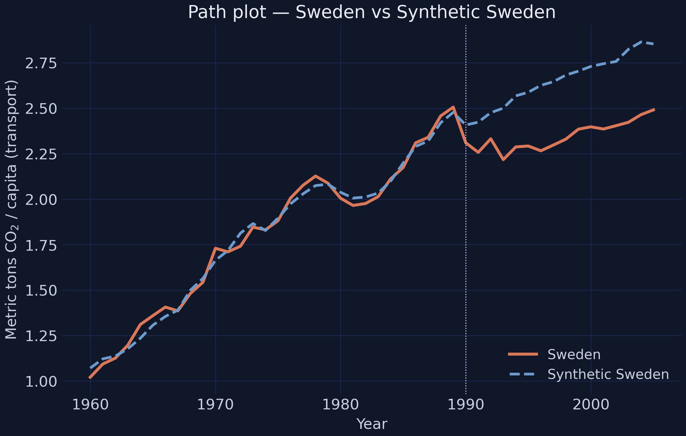
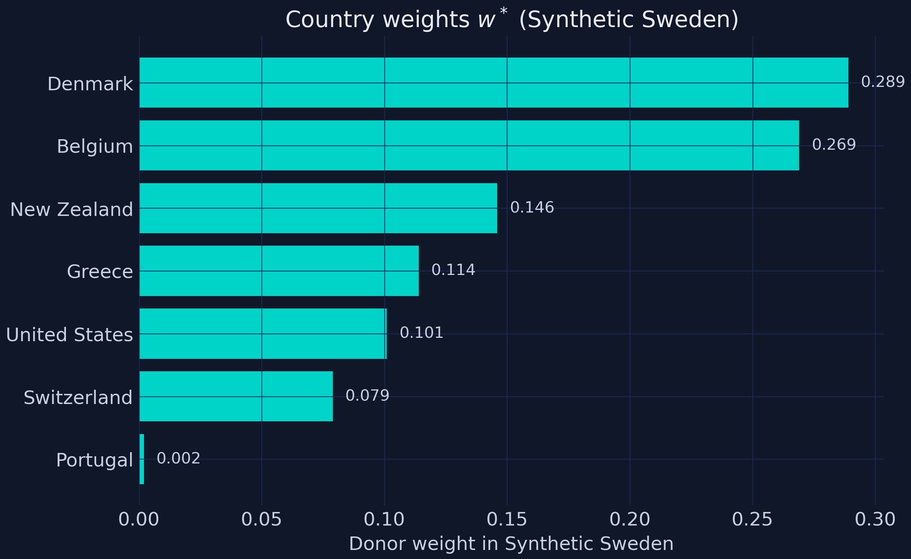
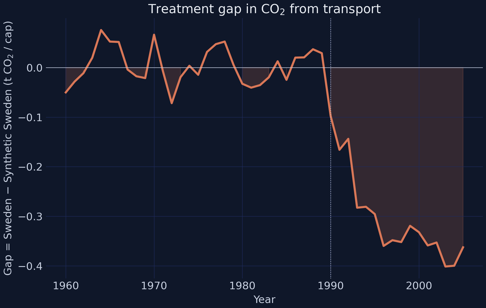
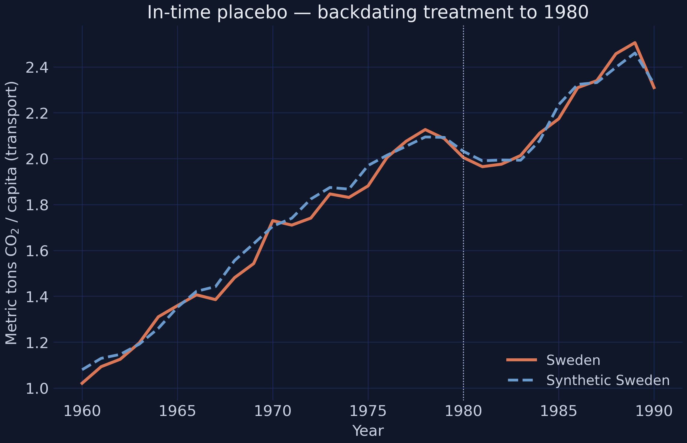
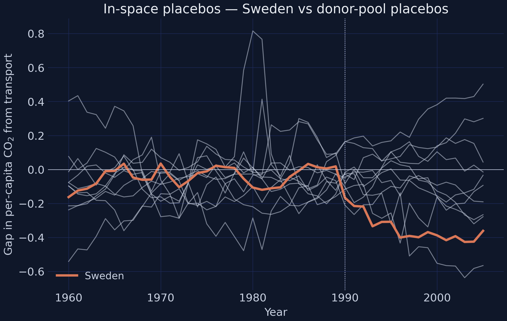
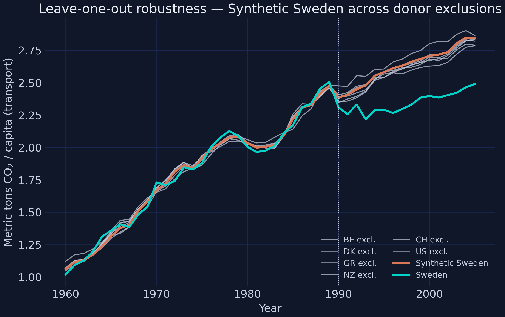
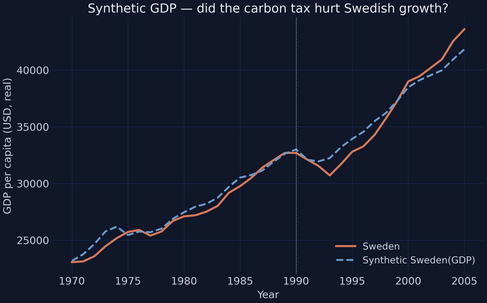
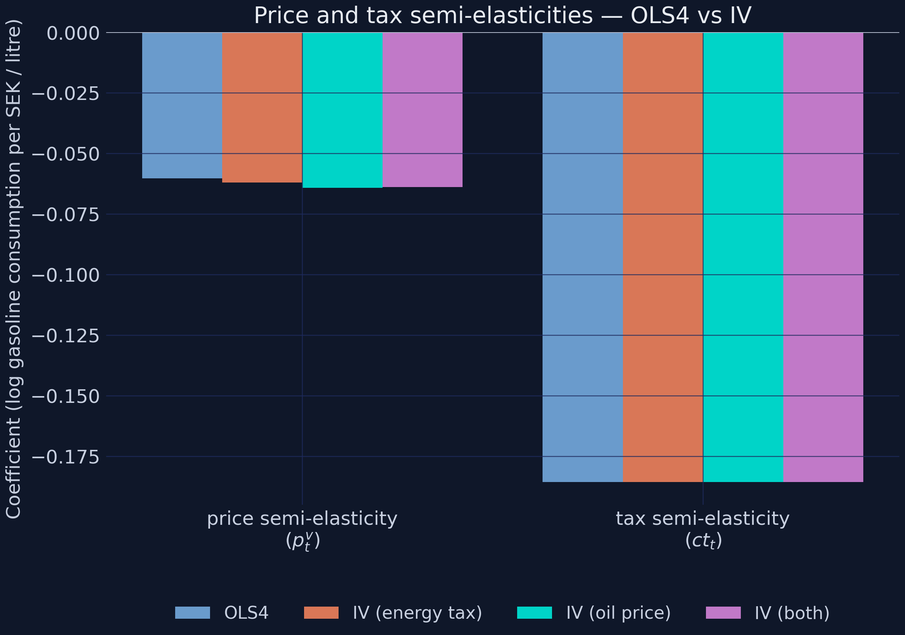
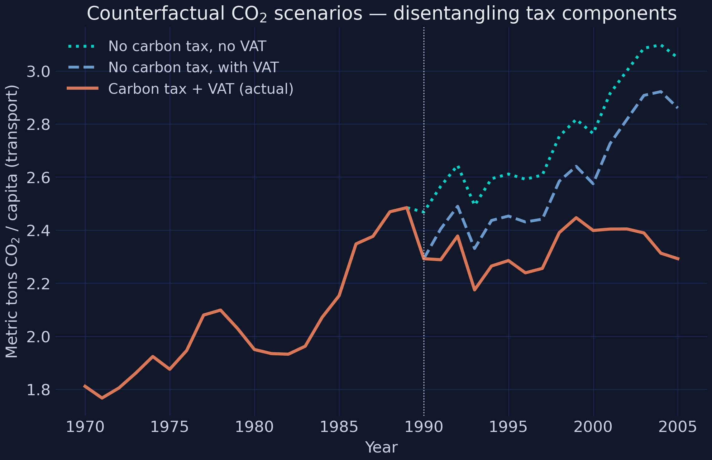

A synthetic-control analysis of Sweden’s 1991 reform, in Python
Nagoya University (GSID)
June 11, 2026
Act I
In 1991 Sweden put one of the world’s first prices on carbon. A naive before/after says emissions went up 0.55 t per capita.
The economy also grew, the fleet changed, oil prices swung. Compared to what would have happened anyway?

Sweden (actual) vs Synthetic Sweden, a weighted blend of donor countries. Lines overlap before 1990; they split after.
Act II
A long pre-period is a structural advantage: it lets us check the counterfactual before the policy, where we know the gap should be zero.
\[\tau_t = Y^{\text{obs}}_{\text{Sweden},t} - \hat Y^{N}_{\text{Sweden},t}, \qquad \hat Y^{N}_{\text{Sweden},t}=\sum_{j=2}^{J+1} w_j\, Y_{jt}\]
We never observe \(\hat Y^{N}\) — Sweden without the tax. Synthetic control estimates it as a weighted blend of donors.
\(Y^{\text{obs}}\) is what happened; \(\hat Y^{N}\) is the counterfactual; the gap \(\tau_t\) is the treatment effect on the treated.
| Comparison | \(\hat\tau\) (ATT) | SE | \(p\) |
|---|---|---|---|
| Naive Sweden pre/post | +0.55 | 0.08 | 0.00 |
| DiD vs Denmark | −0.140 | 0.116 | 0.23 |
| DiD vs OECD pool (cluster SE) | −0.214 | 0.083 | 0.02 |
Differencing against a control flips +0.55 to negative — but one control is underpowered, and the pre-trends don’t line up.
\[w^* = \arg\min_{w}\ (X_1 - X_0 w)^\top V (X_1 - X_0 w) \quad \text{s.t.} \quad w_j \geq 0,\ \sum_j w_j = 1\]
\(X_1\) are Sweden’s pre-treatment predictors; \(X_0\) the donors’. The optimiser also picks \(V\) to minimise pre-period CO2 prediction error.
Non-negative weights that sum to one \(\Rightarrow\) the synthetic is a convex blend — no extrapolation, no parallel-trends assumption.
controls = [c for c in countries if c != "Sweden"]
dataprep = Dataprep(
foo=panel, dependent="CO2_transport_capita",
predictors=["GDP_per_capita", "vehicles_capita",
"gas_cons_capita", "urban_pop"],
treatment_identifier="Sweden", controls_identifier=controls,
time_optimize_ssr=range(1960, 1990),
)
synth = Synth()
synth.fit(dataprep=dataprep, optim_method="Nelder-Mead")
print(synth.weights().sort_values(ascending=False).head(6))
# Denmark .29 · Belgium .27 · New Zealand .15 · Greece .11 · US .10 · Switzerland .08
Donor weights for Synthetic Sweden. Six countries share all the weight; the other nine get essentially zero.

Year-by-year gap, Sweden minus Synthetic Sweden. Flat before the reform; a widening wedge after.
−11.3%
average annual gap, Synthetic Sweden, 1990–2005 (2005 gap −0.36 t/capita, −15%)

In-time placebo: fit as if the tax arrived in 1980. Sweden and its synthetic stay locked together.

In-space placebos: re-run the SCM pretending each donor was treated. Sweden (bold) sits outside the grey bundle.

Leave-one-out: Synthetic Sweden recomputed dropping each high-weight donor in turn. All firmly negative.

Sweden’s actual GDP vs a separately-built Synthetic Sweden (GDP). The paths overlap throughout the post-period.
\[\Delta p^*_t = \beta_0 + \beta_1\, \Delta \Theta_t + \beta_2\, \Delta T_t + \varepsilon_t, \qquad \hat\beta_2 = 1.15\ (\text{SE } 0.15)\]
The 95% CI is roughly \([0.85, 1.45]\) — it contains 1. We cannot reject full pass-through.
If oil firms had absorbed the tax, the price signal never reaches drivers. They didn’t — so the behavioural channel is real.
Salience + permanence: a tax is announced, debated, and persistent; a price drift is just a number on a billboard.

Price and tax semi-elasticities under OLS4 and three IV specifications. The tax coefficient is locked at −0.186.

Three counterfactual CO2 paths. The orange-to-blue gap is the carbon-tax-only contribution; orange-to-teal adds the VAT.
Act III
| Quantity | Value | Reading |
|---|---|---|
| Synthetic gap, avg | −11.3% | CO2 cut ~a tenth, every year, 16 years |
| Permutation \(p\) | 0.067 | 1 of 15 placebos is this extreme |
| Leave-one-out | 8.8%–13% | survives dropping any single donor |
| Tax vs price | 3× | tax bites 3× harder per SEK |
| Synthetic GDP gap | < $233/cap | no detectable growth penalty |
Objection. Sweden is one country, one observation. With 15 donors the smallest possible \(p\) is \(1/15 \approx 0.067\) — you hit the floor, not a clean rejection. And the analysis stops in 2005.
Response. All true, and stated plainly. But three independent falsifications point the same way, the GDP placebo rules out the recession story, and the demand-side mechanism is identified separately. The design under-claims by construction; the convergence of evidence is the argument, not any single \(p\).